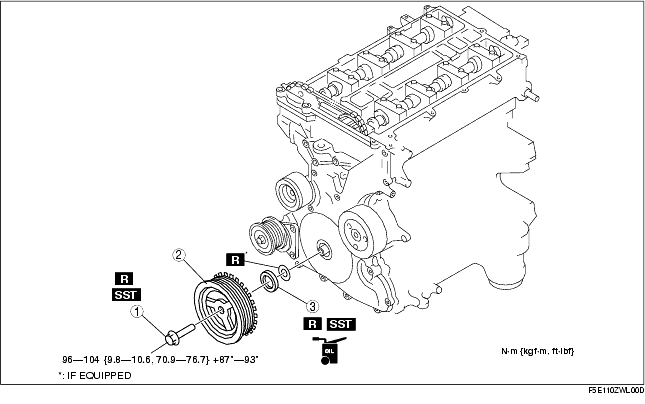

Workshop Manual ➭ ENGINE ➭ MECHANICAL[L8, LF] ➭ FRONT OIL SEAL REPLACEMENT [L8, LF]
FRONT OIL SEAL REPLACEMENT [L8, LF]
id0110a9800800
{: #wp1059779}
-
Remove the battery and battery tray. (See BATTERY REMOVAL/INSTALLATION [L8, LF].)
-
Remove the air cleaner. (See AIR CLEANER ELEMENT INSPECTION [L8, LF].)
-
Remove the drive belt. (See DRIVE BELT INSPECTION [L8, LF].)
-
Remove the under cover. (See TRANSVERSE MEMBER REMOVAL/INSTALLATION.)
-
Remove the front suspension tower bar. (joint)
-
Remove the ignition coil. (See IGNITION COIL REMOVAL/INSTALLATION [L8, LF].)
-
Remove the OCV connector. (With variable valve timing mechanism.)
-
Remove the cylinder head cover. (See TIMING CHAIN REMOVAL/INSTALLATION [L8, LF].)
-
Remove the CKP sensor. (See CRANKSHAFT POSITION (CKP) SENSOR REMOVAL/INSTALLATION [L8, LF].)
-
Remove in the order indicated in the table.
-
Install in the reverse order of removal.

|
Crankshaft pulley lock bolt {: #wp1059976} (See Crankshaft Pulley Lock Bolt Removal Note) {: #wp1060040} (See Crankshaft Pulley Lock Bolt Installation Note) {: #wp1060054} |
|
|---|---|
|
2 {: #wp1060014} |
Crankshaft pulley {: #wp1060017} |
|
3 {: #wp1060021} |
Front oil seal {: #wp1060024} (See Front Oil Seal Removal Note) {: #wp1060088} (See Front Oil Seal Installation Note) {: #wp1060102} |
Crankshaft Pulley Lock Bolt Removal Note
-
Remove the cylinder block lower blind plug.
-
Install the SST.{: #wp1060152}

-
Turn the crankshaft clockwise until the crankshaft is in the No.1 cylinder TDC position (until the balance weight contacts the SST).
-
Hold the crankshaft pulley using the SSTs.{: #wp1060207}

- Remove the crankshaft pulley lock bolt.
Front Oil Seal Removal Note
-
Cut the oil seal lip using a razor knife.
-
Remove the oil seal using a screwdriver wrapped with a rag.{: #wp1060273}
Front Oil Seal Installation Note
-
Apply clean engine oil to a new oil seal.
-
Push the front oil seal in the engine front cover by hand.
-
Tap the oil seal in evenly using the SST and a hammer.{: #wp1060330}
Front oil seal press-in amount0-1.0 mm {0-0.039 in}
Crankshaft Pulley Lock Bolt Installation Note
- Install the SST on the camshaft as shown.
Europe
Except Europe
-
Verify that cylinder No.1 is at TDC of the compression stroke. (Crankshaft balance weight contacts SST.)
-
To position the crankshaft pulley, temporarily tighten it and, using a suitable bolt (M6 X 1.0 length 25 mm-35 mm {0.99 in-1.37 in}), fix the crankshaft pulley to the engine front cover.{: #wp1060510}
- Install the SSTs to the crankshaft pulley, lock the crankshaft against rotation.{: #wp1060560}
- Tighten the crankshaft pulley lock bolt in the order shown using the following two steps.
(1) Tighten to 96-104 N·m {9.8-10.6 kgf·m, 70.9-76.7 ft·lbf} {: #wp1060606}(2) Tighten 87°-93°
-
Remove the M6 x 1.0 bolt.
-
Remove the SST from the camshaft.
-
Remove the SST from the cylinder block lower blind plug.
-
Remove the SST from the crankshaft pulley.
-
Rotate the crankshaft clockwise two turns until the TDC position.
• If not aligned, loosen the crankshaft pulley lock bolt and repeat from Step 1.
- Install the cylinder block lower blind plug.
Tightening torque:18-22 N·m {1.9-2.2 kgf·m, 13.3-16.2 ft·lbf}